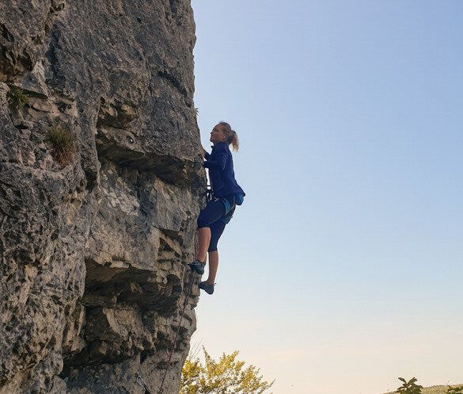

L'envers du décor
- Relais chaîné
- Relais chaîné
Touchez une voie pour voir ses infos, appui long pour la retrouver dans la liste.
-
30
Le Blond
6bDépart dans un petit toit physique qui donne accès à une belle dalle technique. Sortie par le toit de « Petit poids extra fin ».
Mathieu Vigot
-
31
Petit poids extra fin
6a+Départ par « La sans nom » puis à gauche sur le pilier pour rejoindre une dalle et un dévers : beau petit voyage
Jean-Yves Salin
-
32
La sans nom
5cDièdre et fissure pédagogique.
René Hopf
-
33
Ad vitam aeternam
6bUn premier dévers que l’on franchit par la gauche, un deuxième, plus difficile, par la droite.
Jean-Yves Salin
-
34
La balade de gauche
5bDe beaux passages.
René Hopf
-
35
la balade des gens peureux
5bJolie voie variée.
René Hopf
-
36
Amadeus
6cDépart identique à la précédente. Traverser à droite, le pas de bloc du milieu n’est pas évident du tout.
René Hopf
-
36'
Béatrice, sacrée Dalle
7aVariante, partir à gauche sur les plaquettes (itinéraire et nom proposés par Jérome Vialard)
René Hopf
-
37
Ça fleure le lisse
7cPuisqu’on vous le dit ! Très bloc, très beau.
René Hopf
-
38
Fruit de la passion
6b+. La grande classe ! Superbe rocher.
René Hopf
-
39
Fringale lactique
6a+Même départ que la précédente puis la dalle à droite. Un réta peu évident. Probablement le 6a+ le plus difficile de la région.
René Hopf
-
40
Larme à l’œil
6b+/6cUn départ en dévers puis un joli mur technique. On rejoint ensuite la fin de « L’envers du décor ». Un peu éliminante.
René Hopf
-
40'
Variante de "Larme à l'œil"
7bSortie directe (très intéressante).
Luc Pillet
-
41
L’envers du décor
6aVoie historique splendide en deux parties, équipée pour le libre par René. Dièdre et fissure avec une sortie sublime.
René Hopf
-
42
Artère promise
6cTraverse à droite au départ de « L’envers… ». On remonte ensuite la dalle en s’aidant de la fissure à droite (sans, c’est plus dur !) pour venir « buter » sur un beau pas technique. Sortir tout droit.
René Hopf
-
43
Toit et moi
6cTout se joue au départ (bloc). Belle sortie et fissure plus facile.
Jean-Yves Salin
-
44
Ethique et toc !
6bUn départ physique puis on remonte l’angle du mur. La sortie, sur du rocher un peu fragile, demande de la vigilance.
Jean-Yves Salin
